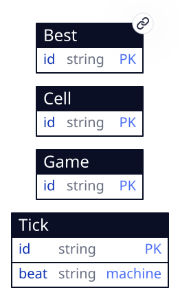
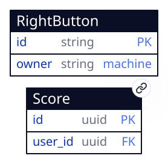

Beginner (/)

9 × 9 squares, 10 mines. The Game menu links the three levels, marking this one current, and opens Best Times; Help opens About.
Four tab entities, one device entity and two server entities, read and written by three level screens and a Hall of Fame.
The field, the games, the clock and the right button are tab: they are machine-checked and owe this document nothing.
Best is device, so a record survives a reload; Score and AppUser are server, the cluster every player shares. Those three are described here.
Every square of every level is a Cell row whose id is its name — b0305 is Beginner's row 3, column 5 — so a click carries the square it landed on.
One reduce, sweep, plays every gesture: a left click opens, a right click (data-on-contextmenu, which the terminal cancels so no browser menu opens) cycles flag → question mark → raised, a click on an opened number chords, and a click on the face or on New resets the level.
It rebuilds the level's field from its rows, plays the gesture, and writes back only the squares and game columns that changed.
The first click on a fresh field returns then: {seed: true}: the terminal draws a uint32 and re-wakes sweep with it, and the mines are laid from that draw anywhere but the clicked square. ?seed= replays the same field.
Time is a Tick row advanced by a one-state machine every second on the terminal's clock (?clock=manual holds it). The clock fold hears each beat and sets each game being played to the seconds since its first click, capped at 999, writing only a timer that moved.
The right button is the game's. The terminal cancels a contextmenu default only where a chart draws an arrow for it, and a reduce never does, so a one-row RightButton carries a one-state chart around the window and its dialogs whose only arrow is contextmenu. The browser's menu never opens over the game; flagging stays sweep's.
| 1 | id | string | pk | this in ['b', 'i', 'e'] |
| 2 | level | string | this in ['beginner', 'intermediate', 'expert'] | |
| 3 | time | int32 | this >= 0 && this <= 999 | |
| 4 | who | string | this.size() >= 1 && this.size() <= 32 |
the first column is the field's ordinal, which a diff keys on · pk primary key · → references · ◇ unique · ≡ indexed · ○ nullable · a rule or default in the last column
created_by, updated_by → app_user, stamped by the platform on every write; not the author’s.
The fastest win at each level, at most one row per level. It is the player's own record, so the program seeds none: sweep puts the row on the first win at a level and patches time when a later win beats it; nothing else writes it. Until a row exists, each Best Times line binds a data-empty-row reading 999 seconds by "Anonymous", as the original's did.
| Field | Type | Constraint |
|---|---|---|
| id | string | this in ['b', 'i', 'e'] |
| level | string | this in ['beginner', 'intermediate', 'expert'] |
| time | int32 | this >= 0 && this <= 999 |
| who | string | this.size() >= 1 && this.size() <= 32 |
| 1 | id | uuid | pk | |
| 2 | user_id | uuid | → app_user | = auth_uid() |
| 3 | level | string | this in ['b', 'i', 'e'] | |
| 4 | time | int32 | this >= 1 && this <= 999 | |
| 5 | name | string | this.size() >= 1 && this.size() <= 20 | |
| 6 | round | string | this.matches('^[0-9]{1,10}$') | |
| 7 | created | timestamp | = now() |
the first column is the field's ordinal, which a diff keys on · pk primary key · → references · ◇ unique · ≡ indexed · ○ nullable · a rule or default in the last column
created_by, updated_by → app_user, stamped by the platform on every write; not the author’s.
One posted win, in the Hall of Fame every player shares. Anyone reads it, signed in or not; a player inserts only rows whose user_id is their own (auth_uid(), the column's default) and changes none. That is decision-score-writes. The (user_id, round) unique makes a repeated submit of one game's win the same row, never a second one.
A level screen's post form creates it from the won game's row: level is the game's id, time its timer, round the draw its field was laid from, and name what the player typed. The time is the client's word: a player who writes to /crud by hand can post any time from 1 to 999, which a homage with nothing at stake accepts.
| Field | Type | Constraint |
|---|---|---|
| id | uuid | minted by the create form |
| user_id | uuid → app_user | default auth_uid() |
| level | string | this in ['b', 'i', 'e'] |
| time | int32 | this >= 1 && this <= 999 |
| name | string | this.size() >= 1 && this.size() <= 20 |
| round | string | this.matches('^[0-9]{1,10}$') |
| created | timestamp | default now() |
| 1 | id | uuid | pk | |
| 2 | handle | string | ◇ | this.size() > 0 |
the first column is the field's ordinal, which a diff keys on · pk primary key · → references · ◇ unique · ≡ indexed · ○ nullable · a rule or default in the last column
created_by, updated_by → app_user, stamped by the platform on every write; not the author’s.
The cluster's identities. The auth service inserts a guest's (id, handle) when the terminal signs one in at boot. Nothing in the app reads it, so its access is internal; a score names its player by the name they typed, never by the handle.
| Field | Type | Constraint |
|---|---|---|
| id | uuid | supplied by the auth service |
| handle | string | unique, this.size() > 0 |
The three screens are the same window over different rows: the cells whose lv is the level, and the game whose id is. Each holds keep: 0, so only the level on screen runs a metronome.

9 × 9 squares, 10 mines. The Game menu links the three levels, marking this one current, and opens Best Times; Help opens About.

16 × 16 squares, 40 mines; the same window.

30 × 16 squares, 99 mines; the same window, wider.

Three boards, one per level: the ten fastest posted wins, by time and then by who posted first, each numbered by its place (data-project index). The menu bar leads back to each level. Reached from the Game menu's Hall of Fame item and from the note a posted win leaves.
A fresh field is laid so the first square is safe: after the draw, output.cell[input.first].mine == 'no' and exactly game.mines cells of the level carry mine == 'yes'. Each cell's n is the count of its up-to-eight neighbours with a mine.
The counter is game.left == game.mines - size(flags), written as left_led: three digits, or a minus and two when negative.
The game is won exactly when every cell with mine == 'no' has look == 'open'; it is lost when a cell with a mine is opened, which becomes boom. A won or lost game ignores every square until reset.
A won game's post panel shows its form until a score with that game's round exists, then a note instead: size(score.filter(s, s.round == game.round)) > 0 hides the form. The unique on (user_id, round) holds the same on the server.
Escape hatches: none. No container, WASM unit, vendored component or external endpoint; every line of app code is a handler the terminal runs in a compartment.
Sign-in: guests, minted silently. The brief asked for Google sign-in through Firebase. The terminal offers passkey and guest and nothing else (Firebase is its planned third mode), and pronto refuses a program that demands a mode the terminal lacks. The edge tier, where this app is released, signs in guests only: passkeys need the auth service's ceremonies, which the edge does not run. So auth.required is false, the terminal mints a guest at boot, and a guest's session lives as long as the tab. A winner types a name with each post, as the original's record box asked for one.
Score: everyone reads, the owner inserts. #Access has no such mode, so Score is declared public and 011_score_writes.sql adds one permissive INSERT arm, WITH CHECK (user_id = auth_uid()), as realworld's owner writes do. There is no UPDATE and no DELETE arm. Declaring it private and widening SELECT in SQL would make the browser believe "mine" where the server means "everyone's".
Released to Cloudflare, not Pages. A ranking every player shares needs a cluster every player reaches. The Pages target runs a whole cluster inside each tab, so its Hall of Fame would hold one player's wins. The edge target runs one cluster in a Durable Object behind a Worker, and serves guests.
Durability: the game is tab, the records device. A game in progress lives as long as the tab, as it did in the original's window; only Best Times was ever kept, and here it survives a reload in this browser.
Levels are three routes rather than a resize of one field: each level keeps its own rows and its own game, the field is seeded by CUE for all three, and no reduce ever has to add or remove squares.